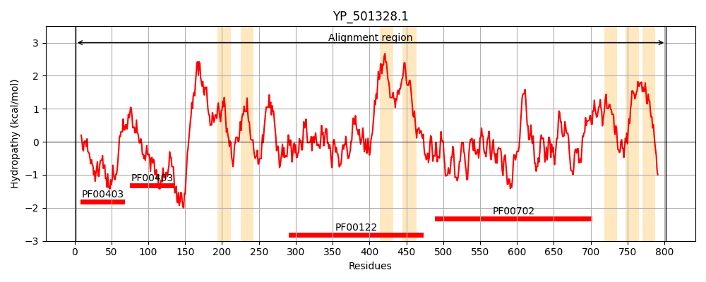
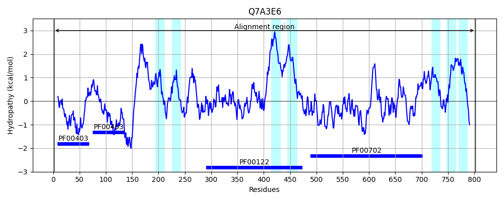
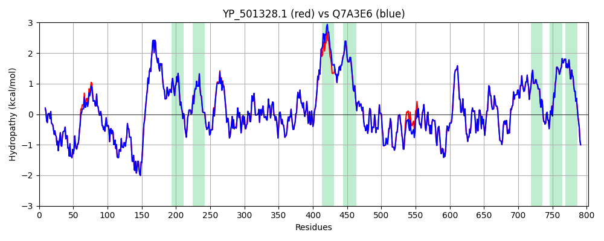

Hit Accession: Q7A3E6
Hit TCID: 3.A.3.5.19
Hit Description: gnl|BL_ORD_ID|15368 gnl|TC-DB|Q7A3E6|3.A.3.5.19 Copper-transporting ATPase copA - Staphylococcus aureus (strain N315).
Mach Len: 802
e:0.000000
Query TMS Count : 7
Hit TMS Count: 7
TMS-Overlap Score: 6.600000
Predicted Substrates:CHEBI:49807;lead(2+), CHEBI:23380;copper(2+), CHEBI:34754;iron(2+)
BLAST Alignment:
Score: 4024 , Bit scores: 1554 bits, E-value: 0.0e+00, Alignment length: 802, Percentage identity: 99
Query: 1 MANTKKTTLDITGMTCAACSNRIEKKLNKLDDVNAQVNLTTEKATVEYNPDQHDVQEFINTIQHLGYGVAVETVELDITGMTCAACSSRIEKVLNKMDGVQNATVNLTTEQAKVDYYPEETDADKLVTRIQKLGYDASIKDNNKDQTSRKAEALQHKLIKLIISAVLSLPLLMLMFVHLFNMHIPALFTNPWFQFILATPVQFIIGWQFYVGAYKNLRNGGANMDVLVAVGTSAAYFYSIYEMVRWLNGSTTQPHLYFETSAVLITLILFGKYLEARAKSQTTNALGELLSLQAKEARILKDGNEVMIPLNEVHVGDTLIVKPGEKIPVDGKIIKGMTAIDESMLTGESIPVEKNVDDTVIGSTMNKNGTITMTATKVGGDTALANIIKVVEEAQSSKAPIQRLADIISGYFVPIVVGIALLTFIVWITLVTPGTFEPALVASISVLVIACPCALGLATPTSIMVGTGRAAENGILFKGGEFVERTHQIDTIVLDKTGTITNGRPVVTDYHGDNQTLQLLATAEKDSEHPLAEAIVNYAKEKQLILTETTTFKAVPGHGIEATIDHHHILVGNRKLMADNDISLPKHISDDLTHYERDGKTAMLIAVNYSLTGIIAVADTVKDHAKDAIKQLHDMGIEVAMLTGDNKNTAQAIAKQVGIDTVIADILPEEKAAQIAKLQQQGKKVAMVGDGVNDAPALVKADIGIAIGTGTEVAIEAADITILGGDLMLIPKAIYASKATIRNIRQNLFWAFGYNIAGIPIAALGLLAPWVAGAAMALSSVSVVTNALRLKKMRLEPRRKDA 802
MANTKKTTLDITGMTCAACSNRIEKKLNKLDDVNAQVNLTTEKATVEYNPDQHDVQEFINTIQHLGYGV VETVELDITGMTCAACSSRIEKVLNKM+GVQNATVNLTTEQAKVDYYPEETDADKLVTRIQKLGYDASIKDNNKDQTSRKAEALQHKLIKLIISAVLSLPLLMLMFVHLFNMHIPALFTNPWFQFILATPVQFIIGWQFYVGAYKNLRNGGANMDVLVAVGTSAAYFYSIYEMVRWLNGSTTQPHLYFETSAVL+TLILFGKYLEARAKSQTTNALGELLSLQAKEARILKDGNEVMIPLNEVHVGDTLIVKPGEKIPVDGKIIKGMTAIDESMLTGESIPVEKNVDDTVIGSTMNKNGTITMTATKVGGDTALANIIKVVEEAQSSKAPIQRLADIISGYFVPIVVGIALL FIVWITLVTPGTFEPALVASISVLVIACPCALGLATPTSIMVGTGRAAENGILFKGGEFVERTHQIDTIVLDKTGTITNGRPVVTDYHGDNQTLQLLATAEKDSEHPLAEAIVNYAKEKQL LTETTTFKAVPGHGIEATIDHHHILVGNRKLMADNDISLPKHISDDLTHYERDGKTAMLIAVNYSLTGIIAVADTVKDHAKDAIKQLHDMGIEVAMLTGDNKNTAQAIAKQVGIDTVIADILPEEKAAQIAKLQQQGKKVAMVGDGVNDAPALVKADIGIAIGTGTEVAIEAADITILGGDLMLIPKAIYASKATIRNIRQNLFWAFGYNIAGIPIAALGLLAPWVAGAAMALSSVSVVTNALRLKKMRLEPRRKDA
Sbjct: 1 MANTKKTTLDITGMTCAACSNRIEKKLNKLDDVNAQVNLTTEKATVEYNPDQHDVQEFINTIQHLGYGVTVETVELDITGMTCAACSSRIEKVLNKMNGVQNATVNLTTEQAKVDYYPEETDADKLVTRIQKLGYDASIKDNNKDQTSRKAEALQHKLIKLIISAVLSLPLLMLMFVHLFNMHIPALFTNPWFQFILATPVQFIIGWQFYVGAYKNLRNGGANMDVLVAVGTSAAYFYSIYEMVRWLNGSTTQPHLYFETSAVLLTLILFGKYLEARAKSQTTNALGELLSLQAKEARILKDGNEVMIPLNEVHVGDTLIVKPGEKIPVDGKIIKGMTAIDESMLTGESIPVEKNVDDTVIGSTMNKNGTITMTATKVGGDTALANIIKVVEEAQSSKAPIQRLADIISGYFVPIVVGIALLIFIVWITLVTPGTFEPALVASISVLVIACPCALGLATPTSIMVGTGRAAENGILFKGGEFVERTHQIDTIVLDKTGTITNGRPVVTDYHGDNQTLQLLATAEKDSEHPLAEAIVNYAKEKQLTLTETTTFKAVPGHGIEATIDHHHILVGNRKLMADNDISLPKHISDDLTHYERDGKTAMLIAVNYSLTGIIAVADTVKDHAKDAIKQLHDMGIEVAMLTGDNKNTAQAIAKQVGIDTVIADILPEEKAAQIAKLQQQGKKVAMVGDGVNDAPALVKADIGIAIGTGTEVAIEAADITILGGDLMLIPKAIYASKATIRNIRQNLFWAFGYNIAGIPIAALGLLAPWVAGAAMALSSVSVVTNALRLKKMRLEPRRKDA 802 | Protein Hydropathy Plots: |
|---|
|  |  |
Pairwise Alignment-Hydropathy Plot:
|
|---|
|  |